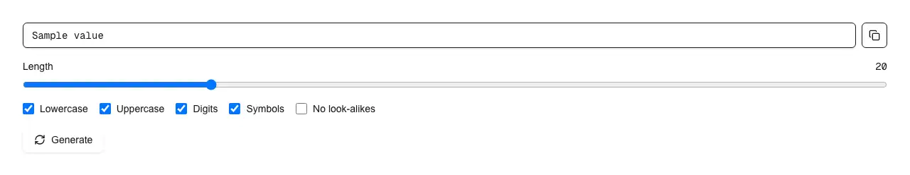

A password generator: a read-only field holding the generated password, a Generate control, a copy button, and switches for length, character classes and look-alike exclusion. Reach for it wherever a screen offers to invent a credential rather than ask for one — the "Suggest a strong password" affordance beside a sign-up, registration or change-password field, an admin creating a user or issuing a temporary password for a new employee, a settings screen minting an API key, access token, client secret or webhook signing key, a service-account or database credential during setup, a Wi-Fi or router passphrase printed for someone to type on another device, and any rotate-credentials or reset flow. It is the third piece of a set and does the opposite job to the other two: password-input is the field a person types their own password into, password-strength scores a password a person chose, and this one produces a password nobody chose. shadcn/ui ships no generator — there is no crypto call anywhere in its registry — so an agent asked for one writes it inline, and inline is where it goes wrong in ways the output never shows. Math.random is a fast PRNG whose state is recoverable from its own output, so passwords built on it are not unguessable while looking exactly as random; folding a random number into the alphabet with % tilts the result toward the low characters; and satisfying "must contain a digit" by overwriting a fixed position tells an attacker where the digit is. This draws from crypto.getRandomValues, redraws the values that would bias the fold instead of folding them, and guarantees each enabled class by drawing one character per class and then shuffling with a Fisher-Yates pass whose indices come from the same unbiased source, so no position is special. It reports entropy in bits, which is honest arithmetic here precisely because the draw really is uniform. The first password is drawn in an effect rather than during render, so a server-rendered page does not hydrate with a mismatch — the failure that makes a generator look broken in a Next.js app while working perfectly in isolation. The exported generatePassword, buildPools and entropyBits work on their own for seeding, CLI use or tests. Look-alike characters (0O1lI) can be excluded for passwords read off one screen and typed into another. Every colour is a shadcn token so it follows light and dark, and the live region announces that a new password exists without ever speaking the password itself.

Rendered on the shadcn default neutral palette with harness-generated props.
pnpm dlx shadcn@4.21.0 add @pulld/password-generator
| licence | POINTER |
|---|---|
| primitive base | none |
| type | registry:ui |
| files | src/components/ui/password-generator.tsx |
| npm deps pulled | none beyond the pre-installed peer set |
| registry deps | https://pulld.pages.dev/r/copy-button.json |
| semantic / palette / hex | 17 / 0 / 0 |
| writes shared ui/ | yes — can overwrite the project’s own primitives |